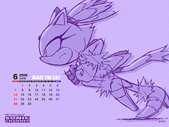

🏠 首頁
📁 SONIC 相關新聞區
SONIC CHANNEL 更新六月桌布與7月粉絲畫作主題
👤 binyi
🕐 2009-05-20 09:36:25

附件: bb1c8ffa.jpg
正解是Blaze~
˙
【ENJOY／桌布】
：新增一個
˙
【ENJOY／桌曆】
：新增6月桌曆
˙
【粉絲畫作】
：7月刊登的主題是「初夏」
投稿至6/19（星期五）
👤 sonic2358
🕐 2009-05-20 10:06:50
原來是在跑步阿，我那時是猜她在飛行呢
👤 willnazo
🕐 2009-05-20 13:29:06
結果猜錯
果然是BLAZE阿XD
👤 wendy92lam
🕐 2009-05-20 13:50:53
被她那飛起的「頭髮」騙了=3=
我那時也以為是nights...
👤 orzilovepm
🕐 2009-05-20 14:11:02
這次還真快公佈耶... O A o
我是被她的手擺的動作唬到了，後面的陰影讓手部看起來很像愛心...b
話說我還是第一次看到貝茲跑步的動作耶...
👤 Snowy-su
🕐 2009-05-20 14:22:04
人物猜對了
想不到雙手會畫成這樣子...w
👤 aoifh
🕐 2009-05-21 09:03:58
被騙了
其實SC會出現NiGHTS野蠻奇怪的，從這點來看就可以知道不是NiGTHS
這個跑步動作..不是SK3中
Sonic的跑步動作?